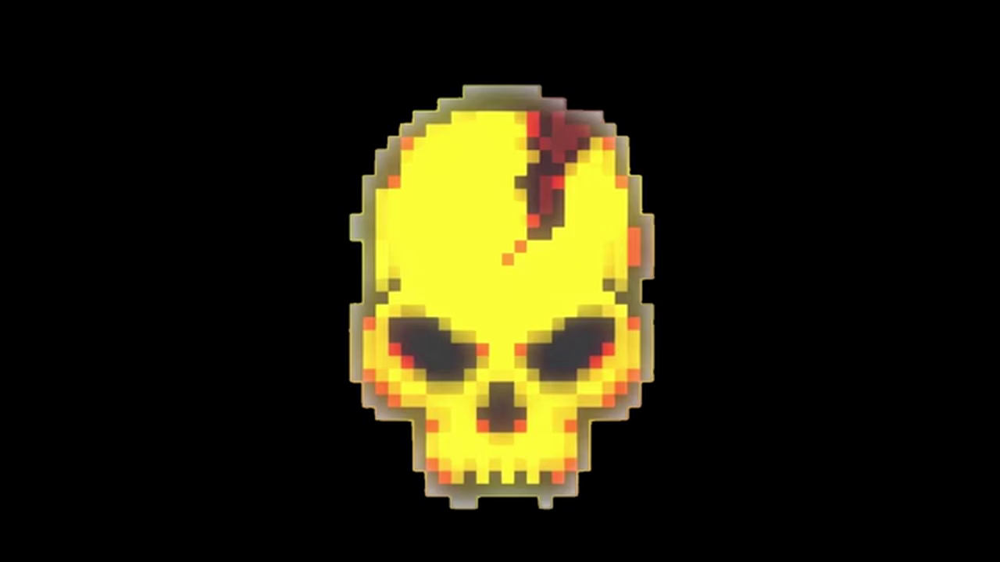

Dying Light: Bad Blood is a battle royale by Techland. The official servers are still online but no longer maintained, and the game has been delisted from Steam: the playerbase is destined to disappear.
PIE Edition is a personal preservation project that keeps the game alive with custom servers, a dedicated launcher and modded content. Free, for anyone who still wants to play it.
~1.4 MB — Windows 10/11
Game mod launchers may trigger false positives in some antivirus software. This is normal for programs that hook into game processes.
Yes. The launcher and all mod files are scanned on VirusTotal with 0 detections. Game modding tools may trigger generic heuristic warnings — this is a false positive common to all game mods.
The game has been delisted from Steam and can no longer be purchased. If you already own it, the launcher patches your existing installation. Otherwise, the launcher can download the full client for you.
No. PIE Edition runs on independent servers, separate from Techland's official ones. The launcher redirects the game to the custom server — the official servers never see your traffic.
It's an OPEN BETA. Core gameplay works — you can create accounts, browse the shop, equip skins and play matches. Loot boxes and leaderboards are not yet functional. Expect some bugs.
The launcher patches your game to connect to our community server instead of Techland's defunct servers. A small DLL hooks into the game's rendering engine to enable custom textures. No original game files are permanently modified.